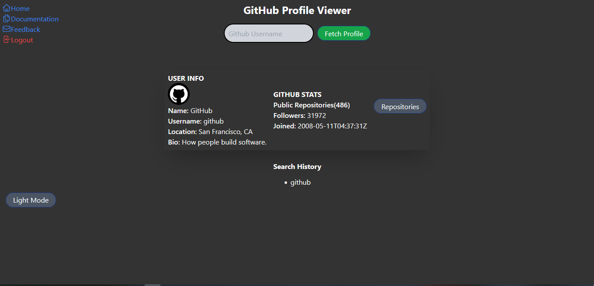
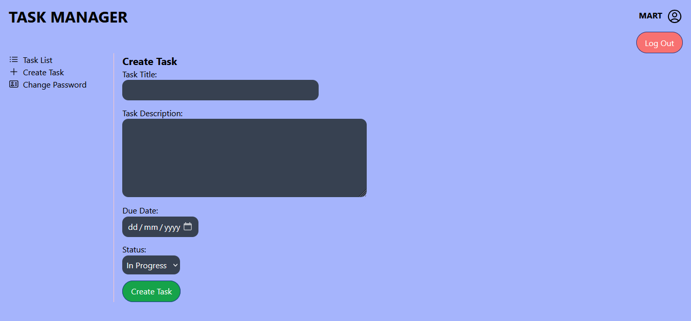

Odong Martin
Odong Martin
Here are some of my projects
Personal Website
 Github Repository
Github Repository
I developed my personal portfolio website to showcase my skills, projects, and experiences as a web developer. The website serves as a central hub for potential clients and collaborators to learn more about my work.
Technologies Used
- Tailwind CSS
Github Repository

Github Profile Viewer
 , Javascript
, Javascript  , MongoDB
, MongoDB  , Tailwind CSS
Github Repository
, Tailwind CSS
Github Repository
I developed the Github Profile Viewer to allow users to easily search for and view GitHub profiles, repositories, and other information.
Technologies Used
NodeJS
, Javascript
, MongoDB
, Tailwind CSS
Github Repository

Task Manager
Github Repository
Live Demo
I developed the Task Manager to provide users with a simple and intuitive way to keep track of tasks, set due dates, and monitor task status.
Technologies Used
Github Repository
Live Demo